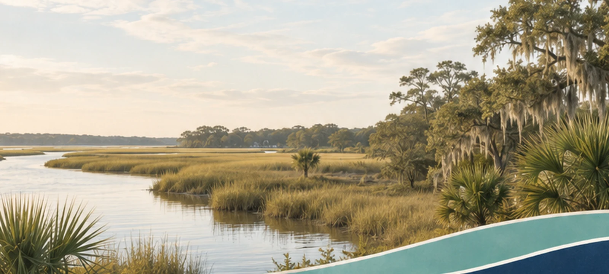

The Reserve at
Wando East
Your independent community reference for homeowner responsibilities, governing documents, architectural requests and local resources in the heart of the Lowcountry.

A clean, neighborly Lowcountry community.
The Reserve at Wando East is a residential community in Mount Pleasant. This website is intended to make everyday HOA information easier to find without replacing the private functions of the current management-company portal.
The Board's approach is practical: keep the neighborhood attractive and safe, protect shared property, communicate clearly, and resolve concerns reasonably before escalating them.
Simple principles
Maintain an attractive, safe environment and protect property values.
Address concerns at the lowest practical level and allow reasonable correction time based on the situation.
Use this site for public reference and CMG for private account-specific matters.
Need the governing documents?
Declarations, bylaws, architectural guidelines, fencing policy and the ARC request form are all available together.